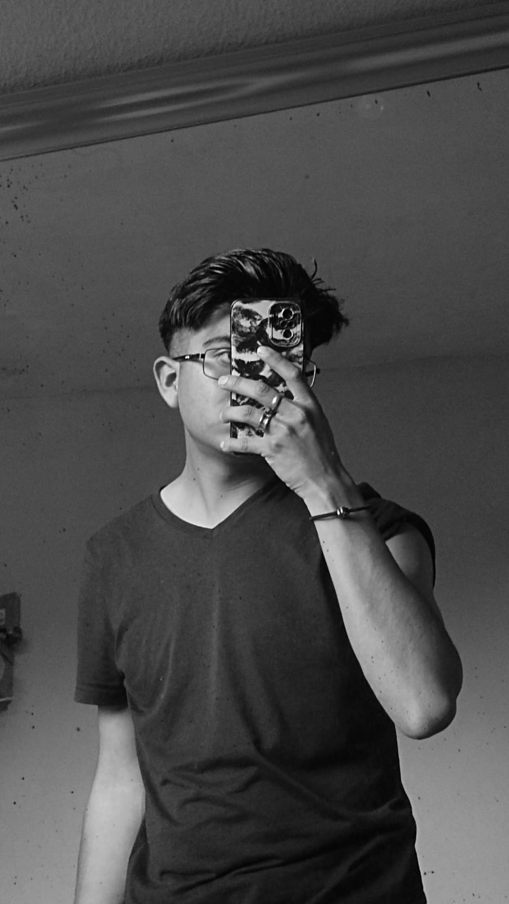

📷 fotos
🌌 Proyectos
🎞️ Recuerdos
👤 Contactos

Mi nombre es Fernando Delgado Rodríguez y soy estudiante de la Universidad Autónoma Metropolitana, Unidad Lerma, donde curso la Licenciatura en Arte y Comunicación Digitales. Actualmente me encuentro en el quinto trimestre de la carrera, etapa en la que he comenzado a desarrollar habilidades relacionadas con la creación y el diseño de sitios web. Conforme avanzo en mis estudios, voy aprendiendo nuevas herramientas y formas de construir y estructurar proyectos digitales.
Vivo en México y disfruto mucho convivir con mis amigos. Para mí, esos momentos son muy valiosos, ya que me permiten compartir experiencias, reír y disfrutar del tiempo sin preocuparme por lo rápido que pasa el día.
Dentro de mis intereses personales y creativos, me gusta mucho la fotografía y la edición de video. Estas actividades me permiten expresar mi creatividad, experimentar con la imagen y contar historias a través de medios visuales, lo cual también complementa mi formación dentro del área de la comunicación digital.
En el ámbito musical, soy un gran admirador de la música regional mexicana, especialmente de La Arrolladora Banda El Limón. Una de mis canciones favoritas es Que quede claro, interpretada por Josi Cuen y Jorge Medina. Además, también me gusta el fútbol y soy aficionado del Club América.